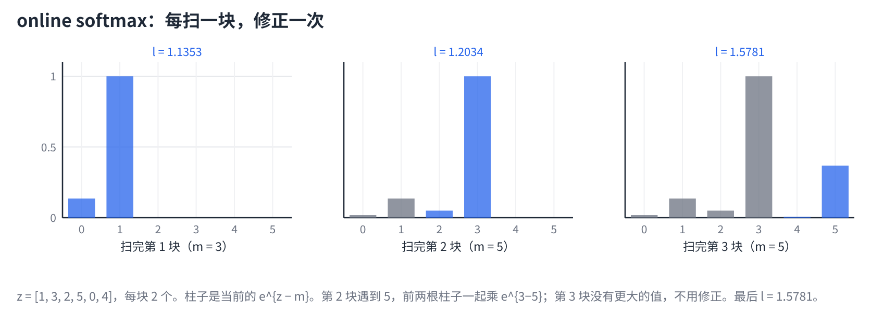
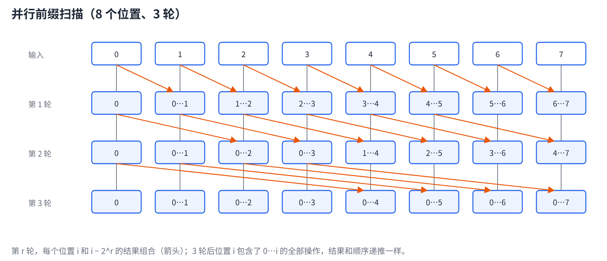
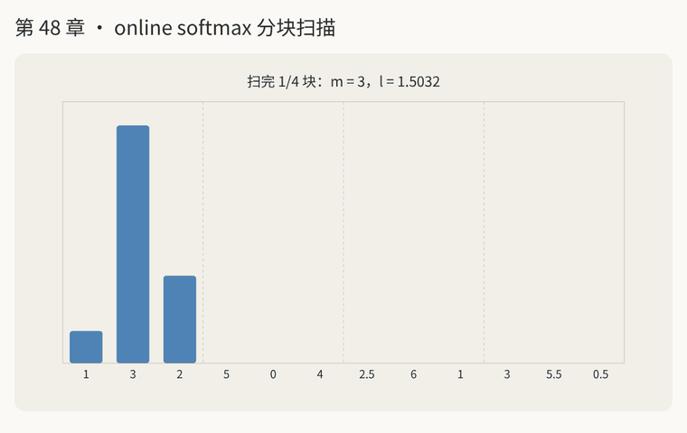

第 48 章 · 高效注意力与序列模型：online softmax 与 FlashAttention、MQA / GQA / MLA、线性注意力、SSM 的并行扫描
本地运行
git clone https://github.com/wikieden/math-and-eval-stats
cd math-and-eval-stats/code/notebooks
pip install jupyterlab torch numpy
jupyter lab ch48_efficient_attention.ipynb也可以下载后直接用 VS Code 打开 .ipynb 运行。需要 GPU 的章节在 Colab 里选「代码执行程序 → 更改运行时类型 → GPU」。
本章回答：FlashAttention 为什么能不存 N×N 的注意力矩阵还算得精确？它靠的 online softmax 是什么递推？MLA 只存一个低秩向量，打分时怎么不把 K 还原出来？线性注意力为什么等价于一个 RNN？Mamba 这类状态空间模型是怎么做到“训练并行、推理递推”的？
讲解日期：2026-11-25 · 上一章：第 47 章 推理成本模型 · 下一章：第 49 章 量化的数学
对应原文：Online normalizer calculation for softmax（Milakov 2018）transformer-deep-dive/materials/text/papers/online-softmax-1805.02867.txt（算法 3 L122、并行版 §3.1 L201）；FlashAttentiontransformer-deep-dive/materials/text/papers/flashattention-2205.14135.txt（HBM 访问次数的分析与下界，L24、L124–L126）；DeepSeek-V2 MLAllm-full-stack/materials/text/papers/deepseek-v2-mla-2405.04434.txt（KV cache 减少 93.3%，L20–L24）；Transformers are RNNstransformer-deep-dive/materials/text/papers/linear-attention-transformers-are-rnns-2006.16236.txt；Mambatransformer-deep-dive/materials/text/papers/mamba-2312.00752.txt（选择性扫描）；NSAtransformer-deep-dive/materials/text/papers/native-sparse-attention-2502.11089.txt
本章缩写：HBM = High Bandwidth Memory（高带宽显存）；SRAM = Static RAM（片上静态存储）；MLA = Multi-head Latent Attention（多头潜在注意力）；SSM = State Space Model（状态空间模型）；NSA = Native Sparse Attention（原生稀疏注意力）；m、l = online softmax 维护的当前最大值、当前分母；φ = 线性注意力的特征映射。全部缩写见 附录 · 缩写与术语表
讲解
第一步：online softmax：一遍扫完，边走边修正（2026-11-25）
类比：边看成绩单边算平均分，看到一个更高的分数时，把之前的“相对分”统一下调。
稳定的 softmax 要先知道最大值（第 22 章），似乎要扫两遍。online 版本（Milakov 算法 3，L122）维护 m（目前的最大值）和 l = Σe^{z − m}：
例子（z = [1, 3, 2, 5, 0, 4]，每块 2 个）：
| 块 | 第 1 块 [1, 3] | 第 2 块 [2, 5] | 第 3 块 [0, 4] |
|---|---|---|---|
| m | 3 | 5 | 5 |
| l | 1.1353 | 1.2034 | 1.5781 |

图 48-1 · 三个面板对应扫完第 1、2、3 块：柱子是当前的 e^{z − m}；第 2 块遇到 5 时，第 1 块的两根柱子一起缩小 e^{3−5} 倍和直接算的 max = 5、Σe^{z−5} = 1.5781 一样。遇到更大的最大值时，旧的 l 乘 e^{m_old − m_new} 修正。注意力输出 O 也可以同样修正：O' = O·e^{m − m'}·(l/l') + 新块的贡献。
一句话：online softmax 维护 (m, l)，遇到新最大值就把旧和乘 e^{m_old − m_new}；一遍扫完，结果精确。
第二步：FlashAttention：不把 N×N 矩阵写回显存（2026-11-25）
标准实现：算 S = QKᵀ（N×N）写回 HBM，读回来做 softmax 写回 P，再读 P 乘 V。FlashAttention：把 Q、K、V 切块放进 SRAM，每个块内用 online softmax 累积输出，N×N 矩阵从不落地。HBM 访问量从 Θ(N² + Nd) 降到 Θ(N²d²/M)（M 是 SRAM 能放的元素数，L124–L126，并证明了这个量级在 SRAM 大小范围内是下界）。
例子（d = 128、SRAM 100 KB，按量级估算）：
| N | 标准实现 HBM 读写 | FlashAttention | 少多少 |
|---|---|---|---|
| 2048 | 34 MiB | 约 5 MiB | 7.5 倍 |
| 8192 | 520 MiB | 约 49 MiB | 10.6 倍 |
注意力是带宽受限的（第 47 章），少搬数据就是快；同时不存 N×N 矩阵，激活显存的 s² 项消失（第 46 章）。算的 FLOPs 一点没少，甚至反向时要重算 S。
一句话：FlashAttention = 分块 + online softmax，N×N 矩阵只在 SRAM 里出现；FLOPs 不变，HBM 读写降一个量级。
第三步：MQA / GQA / MLA：少存 KV（2026-11-25）
- MQA / GQA：多个查询头共用一组 K、V（32 个查询头、8 组 KV：KV cache 1/4；只有 1 组：1/32）；
- MLA（DeepSeek-V2，L20–L24）：每个 token 只缓存一个低秩潜向量 c（如 512 维），K、V 由 c 投影得到：k = W_UK·c。打分时利用矩阵结合律：
把 W_UK 吸收进查询的投影，推理时直接拿 c 打分，不必把每个历史 token 的 K 还原出来（RoPE 那部分维度单独处理）。例子：两种算法的结果相差 7 × 10⁻¹⁵（只是舍入）。论文报告 KV cache 减少 93.3%。
一句话：GQA / MQA 让查询头共享 KV；MLA 只存低秩潜向量，把上投影矩阵吸收进查询，打分不必还原 K。
第四步：线性注意力 = RNN（2026-11-25）
把 softmax 换成核 φ(q)ᵀφ(k)，因果注意力的分子可以按结合律重排：
例子（6 个 token、d = 4、φ = elu + 1）：并行形式（N×N 矩阵）和递推形式（每步一个 d×d 的状态）最大差 2.2 × 10⁻¹⁶。
递推形式每步的计算和状态大小都与序列长度无关：生成时像 RNN 一样 O(1) / token。代价：所有历史被压缩进一个固定大小的矩阵 S，精确检索远处的某个 token 比 softmax 注意力难。
一句话：线性注意力用结合律把 (QKᵀ)V 改成 Q(KᵀV)，并行训练、递推推理，状态大小固定。
第五步：SSM 的并行扫描（2026-11-25）
状态空间模型（如 Mamba）的核心是线性递推 \(h_t = a_t h_{t-1} + b_t\)（a、b 由输入决定：“选择性”）。看起来只能顺序算，但“操作”(a, b) 的组合满足结合律：
于是可以用并行前缀扫描：log₂n 轮，每轮所有位置同时和左边距离 2^r 的位置组合。
例子（8 步，a ~ U(0.5, 1)）：顺序算和并行扫描（3 轮）最大差 5.6 × 10⁻¹⁷。
训练时并行扫描（GPU 友好），推理时就是 O(1) / token 的递推，状态大小固定。Mamba-2 进一步证明这类 SSM 和一种结构化的线性注意力等价。NSA 走的是另一条路：保留 softmax，但每个查询只看压缩块、挑选的块和滑动窗口三部分。

图 48-2 · 8 个位置、3 轮：第 r 轮每个位置和左边距离 2^r 的位置组合（箭头）；3 轮后每个位置都包含了从开头到自己的全部信息场景代码：PyTorch 里调用 FlashAttention 后端（真实 API；本书环境没装 torch，没跑过）：
from torch.nn.attention import sdpa_kernel, SDPBackend
with sdpa_kernel(SDPBackend.FLASH_ATTENTION):
out = F.scaled_dot_product_attention(q, k, v, is_causal=True) # GQA 时把 k、v 的头 repeat_interleave
一句话：线性递推的操作满足结合律，所以能用 log n 轮的并行扫描训练、用 O(1) 递推推理。
动画演示：online softmax 分块扫描

可交互版：animations/48-efficient-attention.html（滑块调已经扫过的块数和块大小）。
怎么看：
- 上排是 12 个分数，已扫过的块高亮；右上角是当前的 m 和 l（第一步）；
- 遇到新的最大值时，之前所有项的柱子（e^{z − m}）一起缩小，这就是乘 e^{m_old − m_new}；
- 扫完最后一块，柱子高度除以 l 就是 softmax，和直接算的完全一样。
练习与作答记录
题 1（第一步）：z = [2, 0, 4, 1]，每块 2 个，写出两块之后的 (m, l)。
作答：（待作答）
题 2（第三步）：64 个查询头、8 组 KV 的 GQA，KV cache 是 MHA 的几分之一？如果 MLA 每层只缓存 576 个数，而 MHA 每层缓存 2 × 64 × 128 个数，减少了多少？
作答：（待作答）
题 3（第五步）：(a, b) = (0.5, 1)、(0.9, 2)、(0.7, 3)，h₀ = 0，用组合规则算出 h₃。
作答：（待作答）
口诀
online softmax 记最大和分母，遇大就乘 e 的差；
Flash 分块进 SRAM，N 方矩阵不落地；
GQA 共享 KV，MLA 存潜向量、上投影吸进查询；
线性注意力换结合律，就是 RNN；
线性递推能结合，log n 轮并行扫。
本章复习卡片
ST157（online softmax 的递推）、ST158（FlashAttention 为什么快）、ST159（GQA / MQA / MLA 怎么省 KV）、ST160（线性注意力 = RNN；SSM 的并行扫描）。练习做完后，按答错、卡住的地方补上。
附录 · 延伸阅读
留给以后深入学习用，不影响本章主线。★ 是建议先读的。
推荐阅读
| 读什么 | 读哪里 | 读它为了什么 |
|---|---|---|
| ★ FlashAttention（Dao 2022） | §3（算法 1、定理 2） | 分块与 IO 复杂度 |
| ★ Online softmax（Milakov 2018） | 算法 3（L122） | 递推的原始形式 |
| ★ 《从约束推导 AI Infra》第 27 章 融合与 Flash、第 9 章 KV 共享、第 10 章 稀疏与线性 | 全章 | 系统视角 |
| DeepSeek-V2（MLA 一节） | §2.1 | 低秩 KV 与解耦 RoPE |
| Mamba / Mamba-2 | §3 / §6 | 选择性扫描、SSM 与注意力的对偶 |
数学原理
- online softmax 的正确性：Σe^{z − m'} = e^{m − m'}Σe^{z − m} 对旧块成立，所以旧和乘修正因子即可。
- 结合律：(QKᵀ)V = Q(KᵀV)，前者 O(N²d)、后者 O(Nd²)；因果 mask 时改成前缀和。
- 扫描的结合律：h = a₂(a₁h₀ + b₁) + b₂ = (a₂a₁)h₀ + (a₂b₁ + b₂)。
- IO 下界：FlashAttention 论文证明对 SRAM 大小在 [d, Nd] 范围内，任何精确注意力算法的 HBM 访问都是 Ω(N²d²/M)。
公式清单
| 公式 | 意思 |
|---|---|
| \(m' = \max(m, \cdot)\)，\(l' = le^{m - m'} + \sum e^{z - m'}\) | online softmax |
| HBM ≈ Θ(N²d²/M) | FlashAttention 的读写量 |
| \(q^\top W_{UK}c = (W_{UK}^\top q)^\top c\) | MLA 的吸收 |
| \(S_i = S_{i-1} + \phi(k_i)v_i^\top\) | 线性注意力的递推 |
| \((a_1, b_1)\circ(a_2, b_2) = (a_2a_1, a_2b_1 + b_2)\) | 扫描的组合 |
代码对照：把本章的数字用代码算一遍
代码在仓库本地
math-and-eval-stats/solutions/chapter-code/ch48_efficient_attention.py，配套测试tests/test_ch48.py：
bash cd math-and-eval-stats/solutions/chapter-code uv run python ch48_efficient_attention.py uv run pytest tests/test_ch48.py
讲义 ↔ 代码：
| 讲义 | 公式 | 写法 | 跑出来 |
|---|---|---|---|
| 第一步 online softmax | (m, l) 递推 | online_softmax_stats(Z) |
(5, 1.5781) |
| 第二步 Flash | 读写量估算 | hbm_bytes(8192, 128) |
520 vs 49 MiB |
| 第三步 MLA | 结合律 | mla_absorb() |
7e-15 |
| 第四步 线性注意力 | 并行 vs 递推 | linear_attention() |
2e-16 |
| 第五步 扫描 | 结合律 | parallel_scan(a, b) |
5.6e-17 |
关键几行：
l = l * np.exp(m - mn) + np.exp(b - mn).sum(); m = mn # online softmax 一块
s += np.outer(fk[i], v[i]); z += fk[i] # 线性注意力的状态更新
return (y[0] * x[0], y[0] * x[1] + y[1]) # 扫描算子的组合
代码里才看得到的 3 件事：
- online softmax 只算了 m、l：没有带上 V 和输出的修正；完整的分块注意力（带 V）并和直接 softmax 对数，留给自己做（里程碑 ME-M29）。
- Flash 的读写量是量级估算：Θ(N²d²/M) 的常数没管，真实收益取决于块大小和实现；标准实现那边也只粗算了 S、P 的读写。
- 并行扫描用的是 Hillis–Steele：总工作量 O(n log n)，比顺序算多；GPU 上常用工作量 O(n) 的 Blelloch 扫描。
自己改一改（不影响练习答案）：
- 把
online_softmax_stats的块大小改成 1 和 6，中间的 (m, l) 怎么变？最后一样吗？ - 给
parallel_scan加一个 h₀ ≠ 0 的初始状态，需要怎么改？